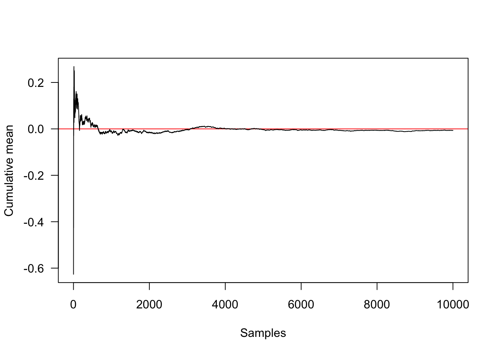
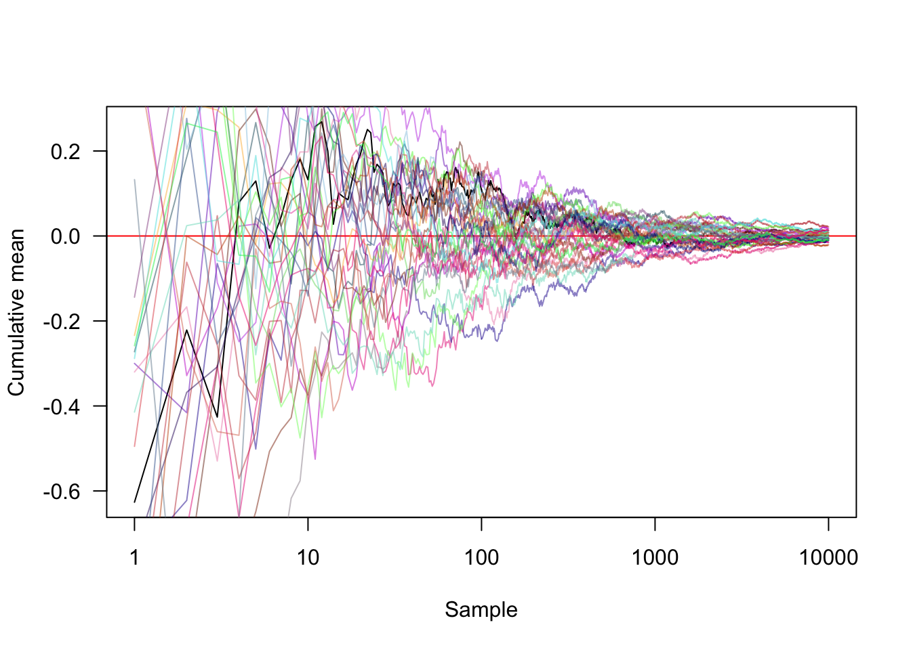
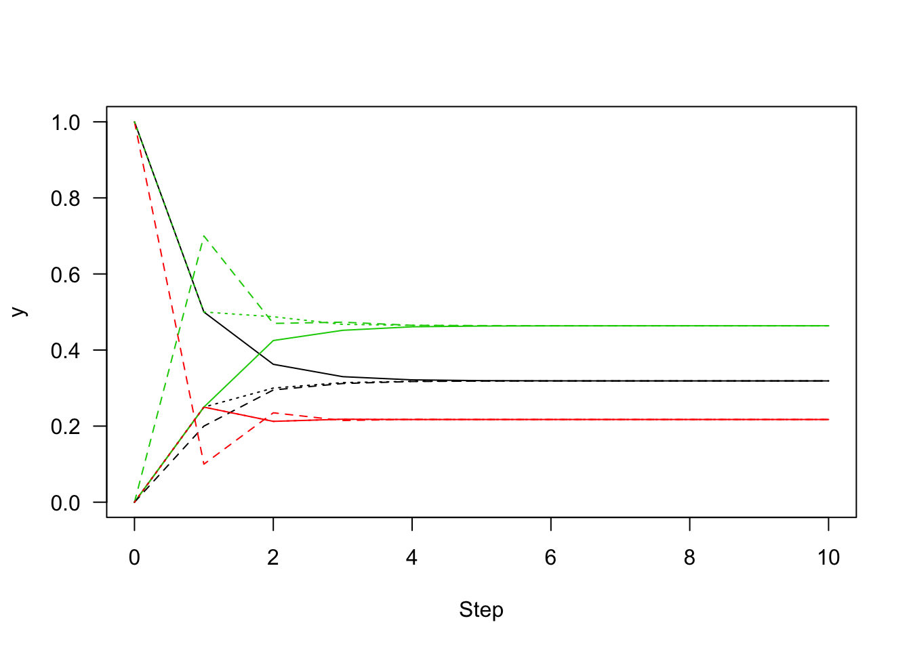
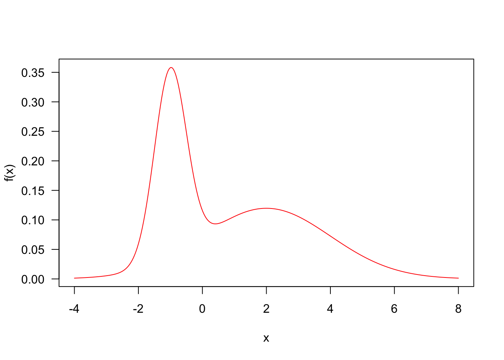
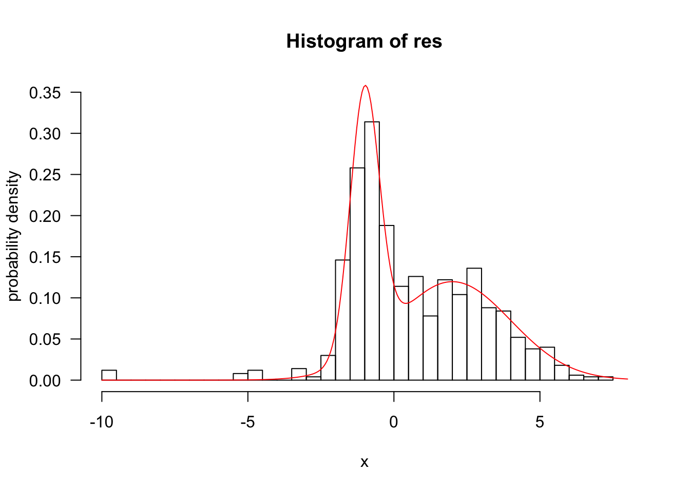
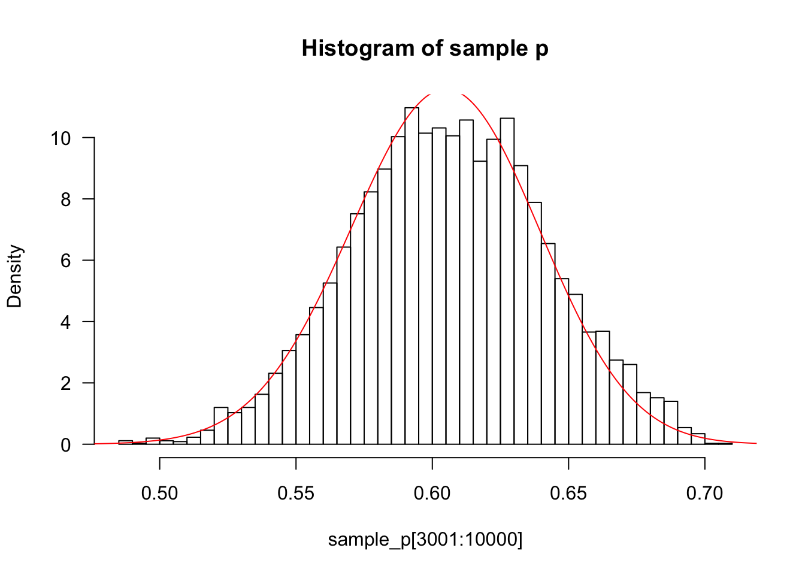
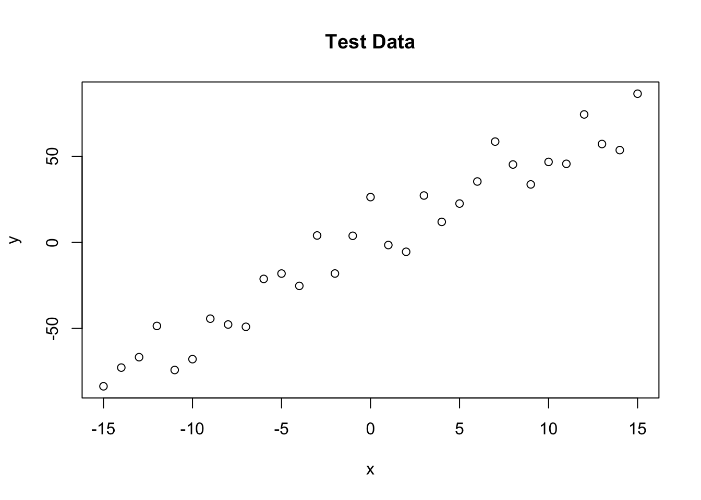
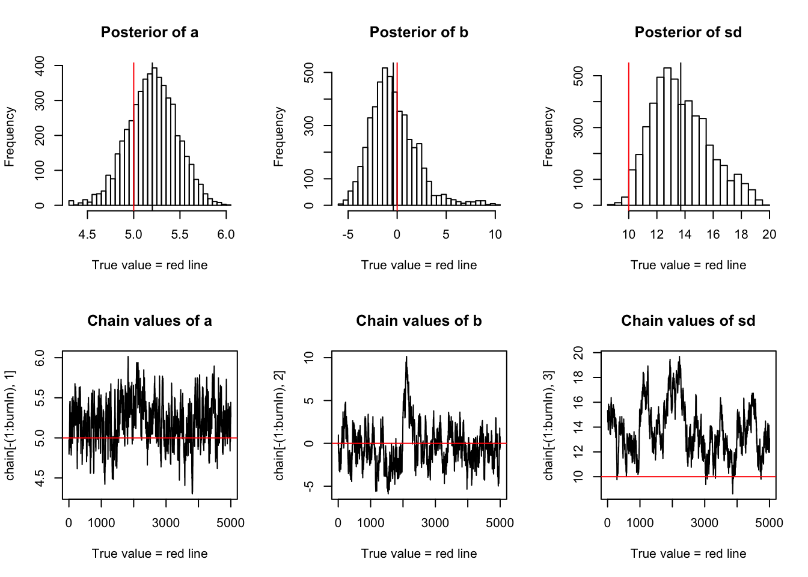

Last updated: 2018-01-29
Code version: cc871a3
MCMC (Markov Chain Monte Carlo) algorithm is used for sampling from a target distribution. Since we use markov chain, so we cannot sample independent samples as we did before. What we are going to do is to construct a markov chain to converge to target distribution as its stationary distribution. In general, this given distribution is usually posterior probability distribution in Baysian framework.
set.seed(1)
## plot convergence towards the true mean (red line at 0)
samples <- rnorm(10000, 0, 1);mean(samples);[1] -0.006537039cummean <- function(x)
cumsum(x) / seq_along(x)
plot(cummean(samples),type="l",xlab="Samples",ylab="Cumulative mean",
panel.first=abline(h=0, col="red"),las=1)
#Transforming the x axis onto a log scale and showing another 30 random approaches
plot(cummean(samples), type="l", xlab="Sample", ylab="Cumulative mean",
panel.first=abline(h=0, col="red"),las=1, log="x")
for (i in seq_len(30))
lines(cummean(rnorm(10000, 0, 1)),
col=rgb(runif(1), runif(1), runif(1), .5))
The Markov chain will have a stationary distribution if the process is irreducible (every state is visitable from every other state) and aperiodic (the number of steps between two visits of a state is not a fixed integer multiple number of steps).
#Stationary distributions.Let P be the transition probability matrix for the chain:
P=matrix(c(.5,.2,.25,.25,.1,.25,.25,.7,.5),ncol=3)
rowSums(P)#the rows sum to 1[1] 1 1 1colSums(P)#the columns do not necessarily sum to 1[1] 0.95 0.60 1.45iterate.P <- function(x, P, n)
{
res <- matrix(NA, n+1, length(x))
res[1,] <- x
for (i in seq_len(n))
res[i+1,] <- x <- x %*% P
res
}
n=10;
#y1 indicates that 100% probability of being in state 1 and no chance of being in any other states
y1 <- iterate.P(c(1, 0, 0), P, n)
y2 <- iterate.P(c(0, 1, 0), P, n)
y3 <- iterate.P(c(0, 0, 1), P, n)
y1 [,1] [,2] [,3]
[1,] 1.0000000 0.0000000 0.0000000
[2,] 0.5000000 0.2500000 0.2500000
[3,] 0.3625000 0.2125000 0.4250000
[4,] 0.3300000 0.2181250 0.4518750
[5,] 0.3215938 0.2172813 0.4611250
[6,] 0.3195344 0.2174078 0.4630578
[7,] 0.3190132 0.2173888 0.4635980
[8,] 0.3188839 0.2173917 0.4637245
[9,] 0.3188514 0.2173912 0.4637574
[10,] 0.3188433 0.2173913 0.4637654
[11,] 0.3188413 0.2173913 0.4637674y2 [,1] [,2] [,3]
[1,] 0.0000000 1.0000000 0.0000000
[2,] 0.2000000 0.1000000 0.7000000
[3,] 0.2950000 0.2350000 0.4700000
[4,] 0.3120000 0.2147500 0.4732500
[5,] 0.3172625 0.2177875 0.4649500
[6,] 0.3184263 0.2173319 0.4642419
[7,] 0.3187400 0.2174002 0.4638598
[8,] 0.3188150 0.2173900 0.4637951
[9,] 0.3188342 0.2173915 0.4637742
[10,] 0.3188390 0.2173913 0.4637697
[11,] 0.3188402 0.2173913 0.4637685y3 [,1] [,2] [,3]
[1,] 0.0000000 0.0000000 1.0000000
[2,] 0.2500000 0.2500000 0.5000000
[3,] 0.3000000 0.2125000 0.4875000
[4,] 0.3143750 0.2181250 0.4675000
[5,] 0.3176875 0.2172813 0.4650313
[6,] 0.3185578 0.2174078 0.4640344
[7,] 0.3187691 0.2173888 0.4638421
[8,] 0.3188228 0.2173917 0.4637855
[9,] 0.3188361 0.2173912 0.4637726
[10,] 0.3188395 0.2173913 0.4637692
[11,] 0.3188403 0.2173913 0.4637684matplot(0:n, y1, type="l", lty=1, xlab="Step", ylab="y", las=1)
matlines(0:n, y2, lty=2)
matlines(0:n, y3, lty=3)
#regardless where it started,y1,y2and y3 indicate 32% chance to converge to state1,22% chance to state2,46% chance to state3A sufficient (but not necessary) condition for the existance of a stationary distribution is Detailed Balance,which implies this markov chain is reversible.
In following 1D problem, core function is step() and run().
p <- 0.4
mu <- c(-1, 2)
sd <- c(.5, 2)
f <- function(x)
p * dnorm(x, mu[1], sd[1]) +
(1-p) * dnorm(x, mu[2], sd[2])
curve(f(x),las=1,col="red",-4,8,n=300)
q <- function(x) rnorm(1, x, 4)
step <- function(x,f,q){
xp=q(x)
alpha=min(1,f(xp)/f(x))
if(runif(1)<alpha)
x=xp
x
}
run <- function(x,f,q,nsteps){
res <- matrix(NA,nrow=nsteps,ncol=length(x))
for(i in 1:nsteps)
res[i,] <- x <- step(x,f,q)
drop(res)}
res <- run(-10,f,q,1000)
hist(res,50,freq=F,xlab="x",ylab="probability density",xlim=c(-10, 8), ylim=c(0, .35),las=1)
z <- integrate(f,-Inf,Inf)$value;###z=1
curve(f(x)/z,add=T,col="red",n=300)
If p is the frequency of the allele A then the genotypes AA, Aa and aa will have frequencies p^2, 2p(1-p) and (1-p)*(1-p). A simple prior for p is to assume it is uniform on [0,1].
Suppose that we sample n individuals, and observe nAA with genotype AA,nAa with genotype Aa and naa with genotype aa. In our example,nAA = 50, nAa = 21, naa=29. Therefore, we observed 121 As, and 79 as, out of 200, the theoretical posterior p is beta(121+1,79+1).
prior=function(p){
if (p>1|| p<0)
return(0)
else
return(1)
}
likelihood=function(p,nAA,nAa,naa){
return(p^(2*nAA) * (2*p*(1-p))^nAa * (1-p)^(2*naa))
}
easyMCMC=function(niter,pinitial,proposesd,nAA,nAa,naa)
{
p=rep(0,niter)
p[1]=pinitial
for (i in 2:niter)
{
newp=p[i-1]+rnorm(1,0,proposesd)
alpha=prior(newp)*likelihood(newp,nAA,nAa,naa)/(prior(p[i-1])*likelihood(p[i-1],nAA,nAa,naa))
if (runif(1)<alpha)
p[i]=newp
else
p[i]=p[i-1]
}
return(p)
}
sample_p=easyMCMC(10000,0.5,0.01,50,21,29)
x=seq(0,1,length=1000)
hist(sample_p[3001:10000],prob=T,las=1,breaks=50,main="Histogram of sample p")###discard the first 3000 p's as "burnin"
lines(x,dbeta(x,122,80),col="red")
trueA <- 5
trueB <- 0
trueSd <- 10
sampleSize <- 31
x <- (-(sampleSize-1)/2):((sampleSize-1)/2)# create independent x-values
y <- trueA * x + trueB + rnorm(n=sampleSize,mean=0,sd=trueSd)# create dependent y according to ax + b + N(0,sd)
plot(x,y, main="Test Data",type="p")
likelihood <- function(param){
a = param[1]
b = param[2]
sd = param[3]
pred = a*x + b
singlelikelihoods = dnorm(y, mean = pred, sd = sd, log = T)
sumll = sum(singlelikelihoods)
return(sumll)
}
prior <- function(param){
a = param[1]
b = param[2]
sd = param[3]
aprior = dunif(a, min=0, max=10, log = T)
bprior = dnorm(b, sd = 5, log = T)
sdprior = dunif(sd, min=0, max=30, log = T)
return(aprior+bprior+sdprior)
}
posterior <- function(param){
return (likelihood(param) + prior(param))
}
proposalfunction <- function(param){
return(rnorm(3,mean = param, sd= c(0.1,0.5,0.3)))
}
run_metropolis_MCMC <- function(startvalue, iterations){
chain = array(dim = c(iterations+1,3))
chain[1,] = startvalue
for (i in 1:iterations){
proposal = proposalfunction(chain[i,])
probab = exp(posterior(proposal) - posterior(chain[i,]))
if (runif(1) < probab){
chain[i+1,] = proposal
}else{
chain[i+1,] = chain[i,]
}
}
return(chain)
}
startvalue = c(4,0,10)
chain = run_metropolis_MCMC(startvalue, 10000)
burnIn = 5000
acceptance = 1-mean(duplicated(chain[-(1:burnIn),]))
par(mfrow = c(2,3))
hist(chain[-(1:burnIn),1],nclass=30,main="Posterior of a", xlab="True value = red line" )
abline(v = mean(chain[-(1:burnIn),1]))
abline(v = trueA, col="red" )
hist(chain[-(1:burnIn),2],nclass=30, main="Posterior of b", xlab="True value = red line")
abline(v = mean(chain[-(1:burnIn),2]))
abline(v = trueB, col="red" )
hist(chain[-(1:burnIn),3],nclass=30, main="Posterior of sd", xlab="True value = red line")
abline(v = mean(chain[-(1:burnIn),3]) )
abline(v = trueSd, col="red" )
plot(chain[-(1:burnIn),1], type = "l", xlab="True value = red line" , main = "Chain values of a" )
abline(h = trueA, col="red" )
plot(chain[-(1:burnIn),2], type = "l", xlab="True value = red line" , main = "Chain values of b")
abline(h = trueB, col="red" )
plot(chain[-(1:burnIn),3], type = "l", xlab="True value = red line" , main = "Chain values of sd")
abline(h = trueSd, col="red" )
1.tutorial link:What is MCMC and when would you use it?
2.stephens999 github:mcmc examples
3.Florian Hartig: A simple Metropolis-Hastings MCMC in R
sessionInfo()R version 3.4.2 (2017-09-28)
Platform: x86_64-apple-darwin15.6.0 (64-bit)
Running under: macOS Sierra 10.12.1
Matrix products: default
BLAS: /Library/Frameworks/R.framework/Versions/3.4/Resources/lib/libRblas.0.dylib
LAPACK: /Library/Frameworks/R.framework/Versions/3.4/Resources/lib/libRlapack.dylib
locale:
[1] zh_CN.UTF-8/zh_CN.UTF-8/zh_CN.UTF-8/C/zh_CN.UTF-8/zh_CN.UTF-8
attached base packages:
[1] stats graphics grDevices utils datasets methods base
loaded via a namespace (and not attached):
[1] compiler_3.4.2 backports_1.1.2 magrittr_1.5 rprojroot_1.3-2
[5] tools_3.4.2 htmltools_0.3.6 yaml_2.1.16 Rcpp_0.12.14
[9] stringi_1.1.6 rmarkdown_1.8 knitr_1.18 git2r_0.21.0
[13] stringr_1.2.0 digest_0.6.14 evaluate_0.10.1This R Markdown site was created with workflowr